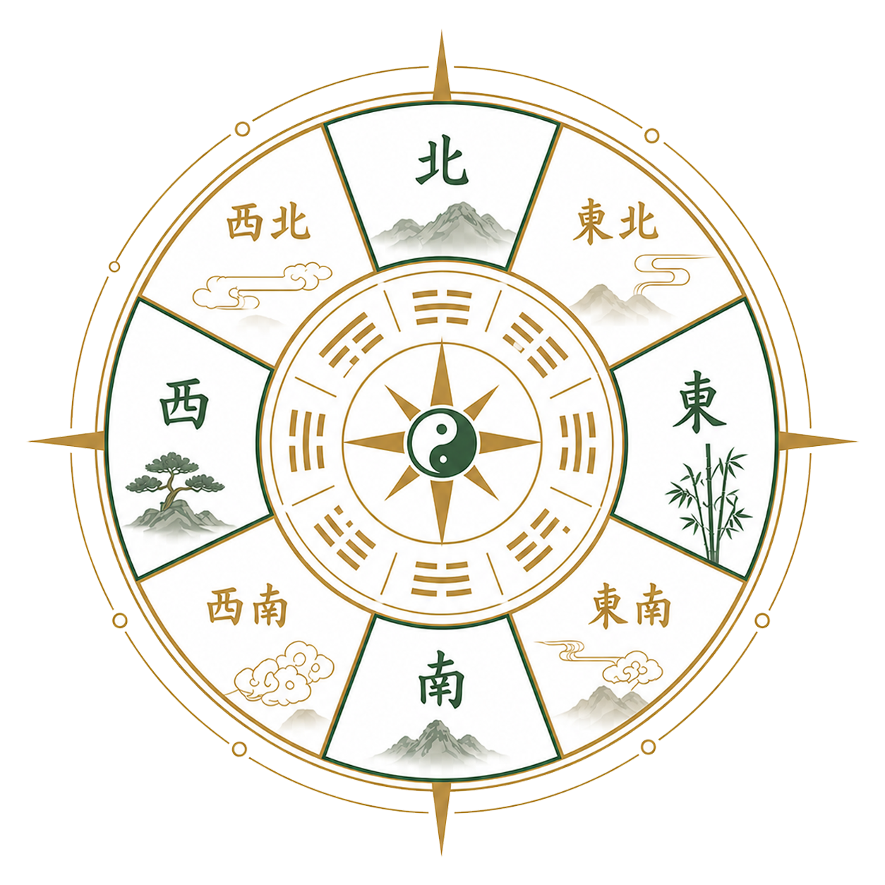

Personal Fate Chart
太乙人道命法盤
以個人出生資料為基礎，呈現命宮、身宮、四柱、限例與流年節奏， 協助你理解自身命運脈絡與關鍵選擇。
- 命盤總覽與十二宮資訊
- 流年、流月、流日推演
- AI 解說與 PDF 報告輸出
療癒小遊戲
想更了解自己、探索人生方向與關鍵選擇時機。
尋找轉換跑道、升遷或年度規劃的參考。
評估家庭、人際與生活節奏，找到更穩定的安排。
用時間週期觀察趨勢，輔助資產配置思考。
命理師、研究者與愛好者可作為分析工具。
使用指南
從輸入資料到生成盤面，再閱讀趨勢與建議，讓排盤結果更容易理解。
依需求選擇太乙人道命法或太乙國運盤。
填寫生日、時辰、分析年份或國運基準時間。
查看命盤、趨勢、吉凶節點與 PDF 報告。